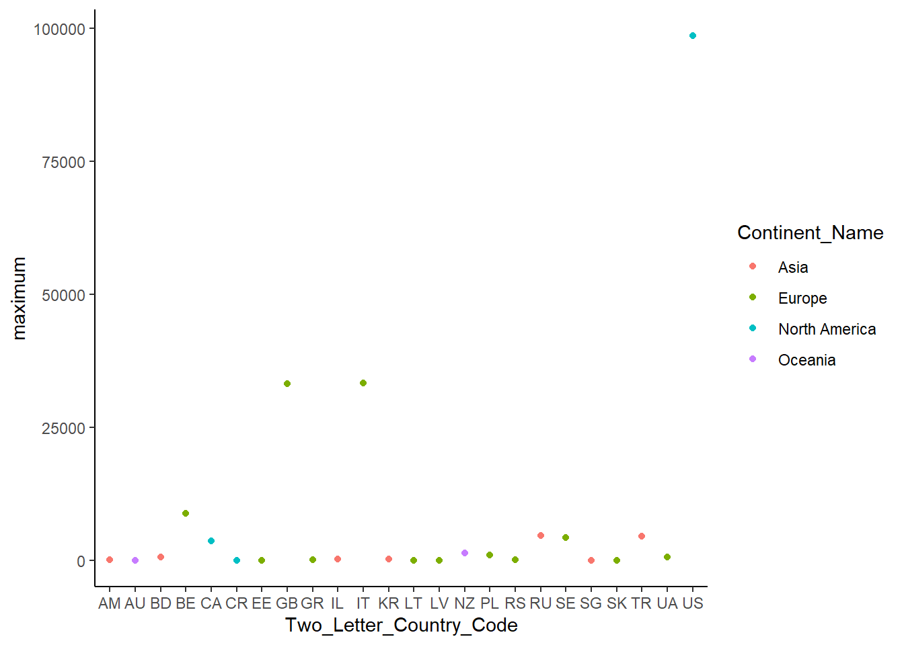

Code
# loading packages and loading the dataset
pacman::p_load(
tidyverse,
magrittr)
ds <- read_csv("covid19.csv")A pneumonia of unknown cause detected in Wuhan, China was first internationally reported from China on 31 December 2019. Today we know this virus as Coronavirus. COVID-19 which stands for COronaVIrus Disease is the disease caused by this virus. Since then, the world has been engaged in the fight against this pandemic. Several measures have therefore been taken to “flatten the curve”. We have consequently experienced social distancing and many people have passed away as well.
In the solidarity to face this unprecedented global crisis, several organizations did not hesitate to share several datasets allowing the conduction of several kinds of analysis in order to understand this pandemic.
Our analysis tries to provide an answer to this question: Which countries have had the highest number of positive cases against the number of tests?
The dataset of our study contains daily & cumulative number of COVID-19 tests conducted, number of positive, hospitalized, recovered & death cases reported by country. In details here are the columns in the dataset:
# loading packages and loading the dataset
pacman::p_load(
tidyverse,
magrittr)
ds <- read_csv("covid19.csv")Determine the dimension of the dataframe, covid_df by using the function dim()
Determine the column names of covid_df using the colnames() function.
Display the first few rows of the covid_df dataset using the function head()
Display the summary of the covid_df dataset using the function glimpse() from the tibble package.
# dataframe dimensions
dim(ds)[1] 10903 14# column names
vector_cols <- colnames(ds)
vector_cols [1] "Date" "Continent_Name"
[3] "Two_Letter_Country_Code" "Country_Region"
[5] "Province_State" "positive"
[7] "hospitalized" "recovered"
[9] "death" "total_tested"
[11] "active" "hospitalizedCurr"
[13] "daily_tested" "daily_positive" Displaying first ten six rows
knitr::kable(head(ds,6))| Date | Continent_Name | Two_Letter_Country_Code | Country_Region | Province_State | positive | hospitalized | recovered | death | total_tested | active | hospitalizedCurr | daily_tested | daily_positive |
|---|---|---|---|---|---|---|---|---|---|---|---|---|---|
| 2020-01-20 | Asia | KR | South Korea | All States | 1 | 0 | 0 | 0 | 4 | 0 | 0 | 0 | 0 |
| 2020-01-22 | North America | US | United States | All States | 1 | 0 | 0 | 0 | 1 | 0 | 0 | 0 | 0 |
| 2020-01-22 | North America | US | United States | Washington | 1 | 0 | 0 | 0 | 1 | 0 | 0 | 0 | 0 |
| 2020-01-23 | North America | US | United States | All States | 1 | 0 | 0 | 0 | 1 | 0 | 0 | 0 | 0 |
| 2020-01-23 | North America | US | United States | Washington | 1 | 0 | 0 | 0 | 1 | 0 | 0 | 0 | 0 |
| 2020-01-24 | Asia | KR | South Korea | All States | 2 | 0 | 0 | 0 | 27 | 0 | 0 | 5 | 0 |
The dataset structure
glimpse(ds)Rows: 10,903
Columns: 14
$ Date <date> 2020-01-20, 2020-01-22, 2020-01-22, 2020-01-2…
$ Continent_Name <chr> "Asia", "North America", "North America", "Nor…
$ Two_Letter_Country_Code <chr> "KR", "US", "US", "US", "US", "KR", "US", "US"…
$ Country_Region <chr> "South Korea", "United States", "United States…
$ Province_State <chr> "All States", "All States", "Washington", "All…
$ positive <dbl> 1, 1, 1, 1, 1, 2, 1, 1, 4, 0, 3, 0, 0, 0, 0, 1…
$ hospitalized <dbl> 0, 0, 0, 0, 0, 0, 0, 0, 0, 0, 0, 0, 0, 0, 0, 0…
$ recovered <dbl> 0, 0, 0, 0, 0, 0, 0, 0, 0, 0, 0, 0, 0, 0, 0, 0…
$ death <dbl> 0, 0, 0, 0, 0, 0, 0, 0, 0, 0, 0, 0, 0, 0, 0, 0…
$ total_tested <dbl> 4, 1, 1, 1, 1, 27, 1, 1, 0, 0, 0, 0, 0, 0, 0, …
$ active <dbl> 0, 0, 0, 0, 0, 0, 0, 0, 0, 0, 0, 0, 0, 0, 0, 0…
$ hospitalizedCurr <dbl> 0, 0, 0, 0, 0, 0, 0, 0, 0, 0, 0, 0, 0, 0, 0, 0…
$ daily_tested <dbl> 0, 0, 0, 0, 0, 5, 0, 0, 0, 0, 0, 0, 0, 0, 0, 0…
$ daily_positive <dbl> 0, 0, 0, 0, 0, 0, 0, 0, 0, 0, 0, 0, 0, 0, 0, 0…Since Province_state contains multiple levels of data, extract only the country-level data in order to not bias our analyses. To do so, we filter the data to keep only the data related to “All States”. “All States” represents the value of the column Province_State to specify that the COVID-19 data is only available at the country level. Feel free at the end of the project to come back to this step and do different kind of filtering, e.g., focus only on a country.
df <- ds %>%
filter(Province_State %in% "All States") %>%
select(-Province_State)
dim(df)[1] 3781 13Revisiting the description of the dataset columns above (not on the days), we can notice that there are columns that provide daily information and others that provide cumulative information.
We should manage those cases (columns with cumulative and daily information) separately because we cannot work with both together. Actually, our analysis would be biased if we made the mistake of comparing a column containing cumulative data and another one containing only one-day data. This is another example of a situation that we want to know from the beginning of the project in order to better analyze our dataset.
covid_df_all_states_daily <- df %>%
select(Date, Country_Region, active, hospitalizedCurr, daily_tested, daily_positive)Our goal here is to extract the top ten cases countries data. Acting like a data scientist, at this step, these are the questions we are asking ourselves.
Write code to summarize the covid_df_all_states_daily dataframe by computing the sum of the number of tested, positive, active and hospitalized cases grouped by the Country_Region column.
Use the function group_by() to group rows by Country_Region column.
Combine the function summarize() and the function sum() to compute the sum for each column.
arrange().Store the result in the variable covid_df_all_states_daily_sum.
Display this dataframe.
Extract the top ten rows from the covid_df_all_states_daily_sum dataframe using the command head(covid_df_all_states_daily_sum, 10)
Store the result in the variable named covid_top_10.
covid_df_all_states_daily_sum <- covid_df_all_states_daily %>%
group_by(Country_Region) %>%
summarise(tested=sum(daily_tested),
positive=sum(daily_positive),
active=sum(active),
hospitalized=sum(hospitalizedCurr)) %>%
arrange(desc(tested))
covid_top_10 <- head(covid_df_all_states_daily_sum, 10)
knitr::kable(covid_top_10)| Country_Region | tested | positive | active | hospitalized |
|---|---|---|---|---|
| United States | 17282363 | 1877179 | 0 | 0 |
| Russia | 10542266 | 406368 | 6924890 | 0 |
| Italy | 4091291 | 251710 | 6202214 | 1699003 |
| India | 3692851 | 60959 | 0 | 0 |
| Turkey | 2031192 | 163941 | 2980960 | 0 |
| Canada | 1654779 | 90873 | 56454 | 0 |
| United Kingdom | 1473672 | 166909 | 0 | 0 |
| Australia | 1252900 | 7200 | 134586 | 6655 |
| Peru | 976790 | 59497 | 0 | 0 |
| Poland | 928256 | 23987 | 538203 | 0 |
Create the following vectors from the covid_top_10 dataframe.
Create the countries vector that contains the Country_Region column values. We can use covid_top_10$Country_Region to extract this column from the covid_top_10 dataframe.
Create the tested_cases vector that contains the tested column values.
Create the positive_cases vector that contains the positive column values.
Create the active_cases vector that contains the active column values.
Create the hospitalized_cases vector that contains the hospitalized column values.
Write code to name the previous vectors: tested_cases, positive_cases, active_cases, and hospitalized_cases with the country names’ vector countries using the function names().
Identify the top three positive against tested cases.
positive_cases by the vector tested_cases using the operator /.positive_tested_top_3, where each country name is associated with its ratio.countries <- covid_top_10 %>%
pull(Country_Region)
tested_cases <- covid_top_10 %>%
pull(tested)
positive_cases <- covid_top_10 %>%
pull(positive)
active_cases <- covid_top_10 %>%
pull(active)
hospitalized_cases <- covid_top_10 %>%
pull(hospitalized)Naming the vectors
names(positive_cases) <- countries
names(tested_cases) <- countries
names(active_cases) <- countries
names(hospitalized_cases) <- countries
# Example
positive_cases United States Russia Italy India Turkey
1877179 406368 251710 60959 163941
Canada United Kingdom Australia Peru Poland
90873 166909 7200 59497 23987 Identifying top three active
ratio <- positive_cases/tested_cases
summary(ratio) Min. 1st Qu. Median Mean 3rd Qu. Max.
0.005747 0.029017 0.057913 0.056658 0.075915 0.113261 positive_tested_top3 <- ratio [ratio > quantile(ratio,0.75)]
positive_tested_top3 United States Turkey United Kingdom
0.10861819 0.08071172 0.11326062 Creating a matrix containing top three countries
top_3 <- c("United States", "Turkey", "United Kingdom")
covid_mat <- covid_top_10 %>%
mutate(ratio = round(positive_cases/tested_cases,2)) %>%
filter(Country_Region %in% top_3)
knitr::kable(covid_mat, caption = "Top Three Countries with High Testing Rate")| Country_Region | tested | positive | active | hospitalized | ratio |
|---|---|---|---|---|---|
| United States | 17282363 | 1877179 | 0 | 0 | 0.11 |
| Turkey | 2031192 | 163941 | 2980960 | 0 | 0.08 |
| United Kingdom | 1473672 | 166909 | 0 | 0 | 0.11 |
Our goal is to put all our answers and datasets together. Since a list can contain several types of objects, we are able to store all the data of our project together. This allows us to have a global view from a single variable and the ability to export our results for other uses.
On the previous steps we answered the following questions:
Which countries have had the highest number of deaths due to COVID-19?
Which countries have had the highest number of positive cases against the number of tests?
Our answers are stored in the variables positive_tested_top_3.
To do so, we created several data structures such as:
Let’s create a list to store all our work in the same variable.
Create a character variable named question that contains our question.
Create a named vector that contains our answer with the following command:
Create a list that contains the data structures mentioned above.
Create a list that contains the following lists: question, answer, and data_structure_list.
question <- "Which countries have had the highest number of positive cases against the number of tests?"
answer <- c("Positive tested cases" = positive_tested_top3)
dataframes <- list( df, covid_df_all_states_daily,covid_df_all_states_daily_sum,covid_top_10)
matrix <- list(covid_mat)
vectors <- list(vector_cols,countries)
data_structure_list<- list(dataframes,matrix,vectors)
covid_analysis_list <- list(question, answer, data_structure_list)
covid_analysis_list[2][[1]]
Positive tested cases.United States Positive tested cases.Turkey
0.10861819 0.08071172
Positive tested cases.United Kingdom
0.11326062 Our goal is to answer this question: Which countries have had the highest number of deaths due to COVID-19?.
To answer this question, we can use visualization, which allows exploring all the data at once in order to have a global view of the data that is needed to answer the question.
We will visualize the maximum number of deaths per country to identify the top three affected countries. We will use the dataset with the cumulative information, covid_df_all_states_cumulative
Select the following columns, related to the cumulative measures, from the covid_df_all_states dataframe: Date, Continent_Name, Two_Letter_Country_Code, positive, hospitalized, recovered, death, and total_tested.
Store the result in covid_df_all_states_cumulative.
covid_df_all_states_cumulative <- df %>%
select(Date,Continent_Name,Two_Letter_Country_Code,positive, hospitalized,recovered, death, total_tested)Write code to summarize the covid_df_all_states_cumulative dataframe by computing the maximum of the death column grouped by Continent_Name and Two_Letter_Country_Code columns.
group_by() to group row by Continent_Name and Two_Letter_Country_Code columns.summarize() and the function max() to compute the maximum for each group.filter(max > 0)).Use the qplot() function of the ggplot2 package to visualize the maximum death for each country.
By examining the plot, identify the top three affected countries
Store your findings as a character vector named death_top_3.
covid_df_all_states_cumulative_max <- covid_df_all_states_cumulative %>%
group_by(Continent_Name, Two_Letter_Country_Code) %>%
summarize(maximum=max(death)) %>%
filter(maximum > 0)`summarise()` has grouped output by 'Continent_Name'. You can override using
the `.groups` argument.qplot(x = Two_Letter_Country_Code,
y = maximum,
color = Continent_Name,
data = covid_df_all_states_cumulative_max) +
theme_classic()Warning: `qplot()` was deprecated in ggplot2 3.4.0.
death_top_3 <- c("Belgium","United Kingdom","Italy")Create a matrix combining the ranking for every measurement in the matrix covid_top_10.
rank(), by indexing this column with its name “tested_cases”. Store the result in the vector tested_cases_rank.rank(), by indexing this column with its name “positive_cases”. Store the result in the vector positive_cases_rank.rank(), by indexing this column with its name “active_cases”. Store the result in the vector active_cases_rank.rank(), by indexing this column with its name “hospitalized_cases”. Store the result in the vector hospitalized_cases_rank.Use the function rbind() to combine these rankings vectors. Store the result in the matrix covid_mat_rank.
pop <- c(331002651, 145934462, 60461826, 1380004385, 84339067,
37742154, 67886011, 25499884, 32971854, 37846611)
co_top_10 <- covid_top_10 %>%
select(tested,positive,active,hospitalized) %>%
as.matrix()
co_top_10 <- (co_top_10 * 100)/pop
co_top_10 <- as_tibble(co_top_10)
tested_cases_rank <- co_top_10 %>%
pull(tested) %>%
rank()
positive_cases_rank <- co_top_10 %>%
pull(positive) %>%
rank()
active_cases_rank <- co_top_10 %>%
pull(active) %>%
rank()
hospitalized_cases_rank <- co_top_10 %>%
pull(hospitalized) %>%
rank()
covid_mat_rank <- rbind(tested_cases_rank,positive_cases_rank,
active_cases_rank,hospitalized_cases_rank)
colnames(covid_mat_rank) <- countries
knitr::kable(covid_mat_rank)| United States | Russia | Italy | India | Turkey | Canada | United Kingdom | Australia | Peru | Poland | |
|---|---|---|---|---|---|---|---|---|---|---|
| tested_cases_rank | 8.0 | 10.0 | 9 | 1.0 | 3.0 | 6.0 | 2.0 | 7 | 5.0 | 4.0 |
| positive_cases_rank | 10.0 | 8.0 | 9 | 1.0 | 5.0 | 6.0 | 7.0 | 2 | 4.0 | 3.0 |
| active_cases_rank | 2.5 | 9.0 | 10 | 2.5 | 8.0 | 5.0 | 2.5 | 6 | 2.5 | 7.0 |
| hospitalized_cases_rank | 4.5 | 4.5 | 10 | 4.5 | 4.5 | 4.5 | 4.5 | 9 | 4.5 | 4.5 |
Our goal is to answer these questions:
Which countries have made the best effort in terms of the number of tests conducted related to their population?
Which countries were ultimately the most and least affected related to their population
Compute the aggregated rankings by summing the rows of the covid_mat_rank matrix.
covid_mat_rank %<>%
colSums()
covid_mat_rank United States Russia Italy India Turkey
25.0 31.5 38.0 9.0 20.5
Canada United Kingdom Australia Peru Poland
21.5 16.0 24.0 16.0 18.5 best_effort_tested_cased_top_3 <- c("Russia","Italy","United States")
most_affected_country <- c("Italy")
least_affected_country <- c("Poland")Which countries have had the highest number of deaths due to COVID-19?
Which countries have had the highest number of positive cases against the number of tests?
Which countries have made the best effort in terms of the number of COVID-19 tests conducted related to their population?
Which countries were ultimately the most and least affected related to their population?
Create a questions list having the above questions.
question_list <- list("Which countries have had the highest number of deaths due to COVID-19?",
"Which countries have had the highest number of positive cases against the number of tests?",
"Which countries have made the best effort in terms of the number of COVID-19 tests conducted related to their population?",
"Which countries were ultimately the most and least affected related to their population?")Create a list that contains our answers with the following association:
"Death" = death_top_3,
"Positive tested cases" = positive_tested_top_3,
"The best effort in test related to the population" = best_effort_tested_cased_top_3,
"The most affected country related to its population" = most_affected_country,
"The least affected country related to its population" = least_affected_country
Store the result in answer_list
Display this list.
answer_list <- list("Death" = death_top_3,
"Positive tested cases" = positive_tested_top3,
"The best effort in test related to the population" = best_effort_tested_cased_top_3,
"The most affected country related to its population" = most_affected_country,
"The least affected country related to its population" = least_affected_country)
answer_list$Death
[1] "Belgium" "United Kingdom" "Italy"
$`Positive tested cases`
United States Turkey United Kingdom
0.10861819 0.08071172 0.11326062
$`The best effort in test related to the population`
[1] "Russia" "Italy" "United States"
$`The most affected country related to its population`
[1] "Italy"
$`The least affected country related to its population`
[1] "Poland"